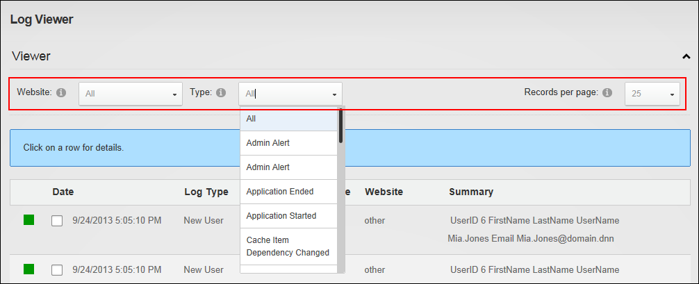

Changing Log Viewer Records
How to filter the event records that are displayed in the Log Viewer by a single event type and set the number of records that are displayed on one page. Note: The records per page will default back to 25 records each time the page is refreshed.
- Navigate to Admin >
 Event Viewer - OR - Navigate to a Log Viewer module.
Event Viewer - OR - Navigate to a Log Viewer module.
- Expand the Viewer section.
- At Website, select All to view events from all sites - OR - Select the required site name.
- Optional. At Type, select an event type to filter events by that event type.
- Optional. Click on an event record to view full details of that event. Re-click the event record to close it.
- At Type, select an event type from the drop down list. The matching records will then be displayed below.
- Optional. At Records per page, select the number of records to be displayed per page from the drop down list.

Viewing one type of logged events